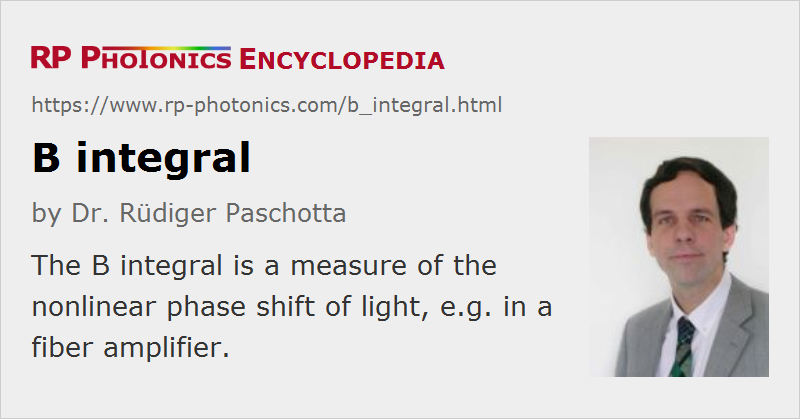

B Integral
Definition: a measure of the nonlinear phase shift of light, e.g. in an amplifier
German: B-Integral
How to cite the article; suggest additional literature
Author: Dr. Rüdiger Paschotta
The B integral is frequently used in the context of ultrafast amplifiers, e.g. for optical components such as the Pockels cell of a regenerative amplifier. It is defined as
where I(z) is the optical intensity along the beam axis (assumed to be highest intensity in the transverse direction, e.g. for a Gaussian beam), z the position in beam direction, and n2 the nonlinear index quantifying the Kerr nonlinearity. As n2 I is the nonlinear change in the refractive index, one easily recognizes the B integral to be the total on-axis nonlinear phase shift accumulated in a passage through the device.
Importance for Self-focusing
For high optical intensities, as often occur when ultrashort pulses are amplified e.g. in a regenerative amplifier, the B integral can become larger than 1. For values above ≈ 3–5, there is a risk that self-focusing may occur: the nonlinear lensing effect can become so strong that the beam collapses to a very small radius, so that the optical intensities are strongly further increased and easily exceed the damage threshold. A single pulse in this regime may be sufficient for destroying the amplifier gain medium or some other component. Other possible effects in this regime are strong spectral broadening and even the breakup of the amplified pulse, a reduction in the achievable gain, and a severely reduced beam quality.
The threshold for self-focusing in terms of the B integral actually depends on the conditions. The approximate value given above is based on the assumption that this value is acquired in a length below the Rayleigh length, so that diffraction effects will not be strong enough to stabilize the beam radius. In a regenerative amplifier, the total B integral for multiple passes through the gain medium may sometimes be well above 5 without causing self-focusing. Similarly, it does not matter that the accumulated B integral for an ultrashort pulse circulating in a mode-locked laser easily becomes greater than 10 within a single microsecond.
Questions and Comments from Users
Here you can submit questions and comments. As far as they get accepted by the author, they will appear above this paragraph together with the author’s answer. The author will decide on acceptance based on certain criteria. Essentially, the issue must be of sufficiently broad interest.
Please do not enter personal data here; we would otherwise delete it soon. (See also our privacy declaration.) If you wish to receive personal feedback or consultancy from the author, please contact him e.g. via e-mail.
By submitting the information, you give your consent to the potential publication of your inputs on our website according to our rules. (If you later retract your consent, we will delete those inputs.) As your inputs are first reviewed by the author, they may be published with some delay.
See also: Kerr effect, nonlinear index, optical amplifiers, self-focusing, laser-induced damage
and other articles in the category nonlinear optics
|  |
If you like this page, please share the link with your friends and colleagues, e.g. via social media:
These sharing buttons are implemented in a privacy-friendly way!